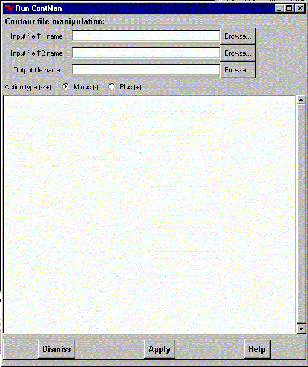

**************************************************************************
Run ContMan program widget
Leif Laaksonen CSC 1999
**************************************************************************
Run the ContMan to subract or add two gOpenMol plt grid mesh files and write the result out to a plt file format used by gOpenMol.
Give input1, input2 and output file names. Choose either Minus (-) or Plus (+) action. Click the Apply button to do the operation.

Line command: no line command available inside gOpenMol. Use Unix/Dos shell line command.
**************************************************************************
LUL/1999
**************************************************************************